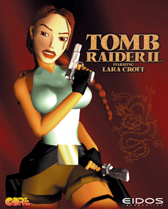

HINTS

- Use the survival instinct function, it will make everything easier
- Tap the LB-button to trigger the survival instincts
- The hunter has the most ammo capacity
- Axe Strikes: Stun enemies with the Axe
- Shotgun Expert: Additional EXP for finishing the enemies with the Shotgun after dodging a melee attack
- Climber's Agility: Increases climbing skills and resistance when falling from heights
- Dodge Kill: Execute light-armoured enemies after dodging
- The Brawler-category will support you on how to fight the enemies later in the game